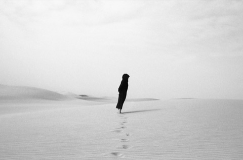
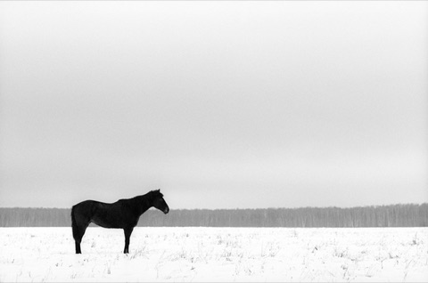

Rollei
在产
Retro 80S 胶卷
- 感光度
- ISO 80
- 类型
- 全色性
- 颗粒
- 细颗粒
- 尺寸
- 35mm · 120
- 分类
- 传统颗粒
- 状态
- 在产
特性 / 手感 · Character
仿经典片基、细腻、暗部透亮，适合风光/人像的复古干净质感。
Classic-style base, fine grain, bright shadows - a clean vintage feel for landscape and portrait.
适用场景 · Best for
风光 人像 复古
使用感受
摄影师对 Rollei Retro 80S 的使用感受是“爱恨交织”。其优点备受赞誉：高反差、高锐度、颗粒极其平滑，配合扩展的红外感光能力，尤其适合建筑、城市景观及人像创作。但其宽容度较低，需像拍反转片一样精确控制高光。最大的争议点在于 120 格式的品控问题，多位用户反映底片上出现灰斑（mottled）或背纸印字，而 35mm 格式则口碑极佳。总的来说，它是一款个性鲜明但需要耐心对待的胶片。
参考价格 · Price
二手多为未开封 / 临期或分装卷，行情与全新接近（约全新价 85%–100%）；停产卷稀缺，常高于原价 · 均随市场波动，仅供参考
全新 New
135约¥55–75
120约¥65–100
二手 Used
135约¥47–75
120约¥55–100
实拍样片


© Dmitriy Ryabov · Samuel Santiago